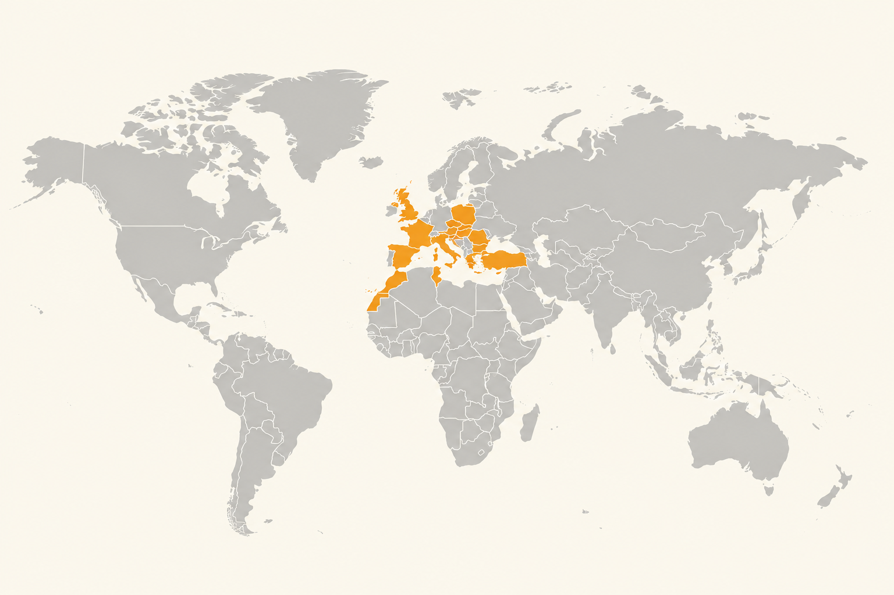
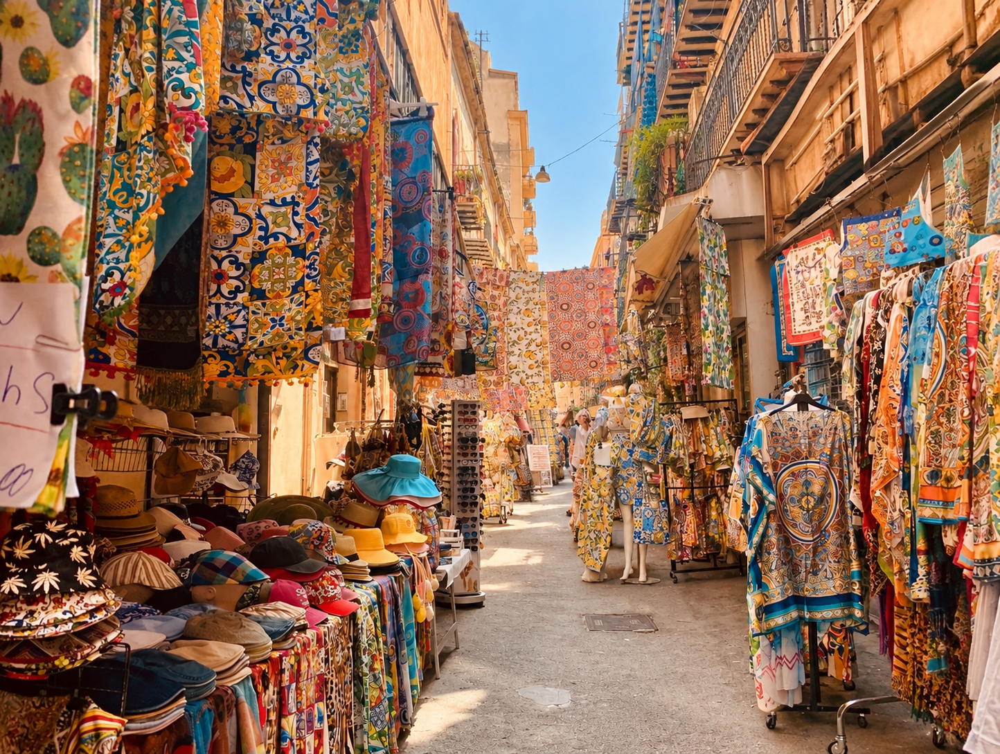
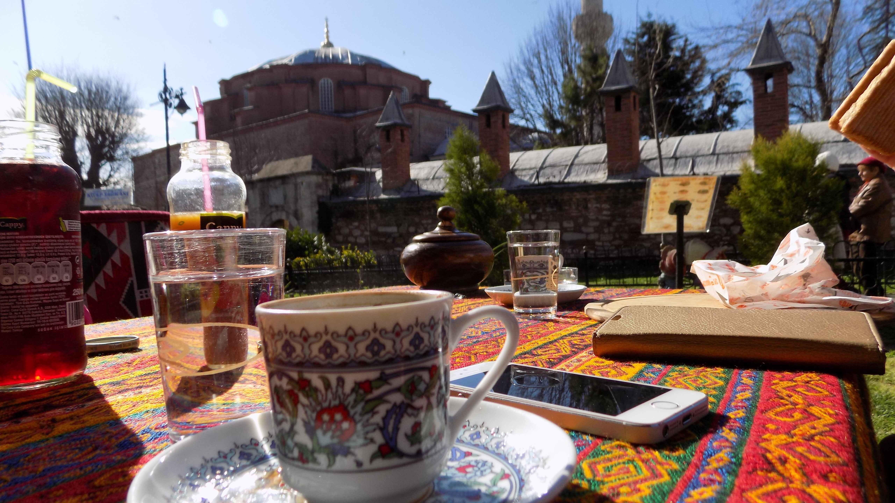
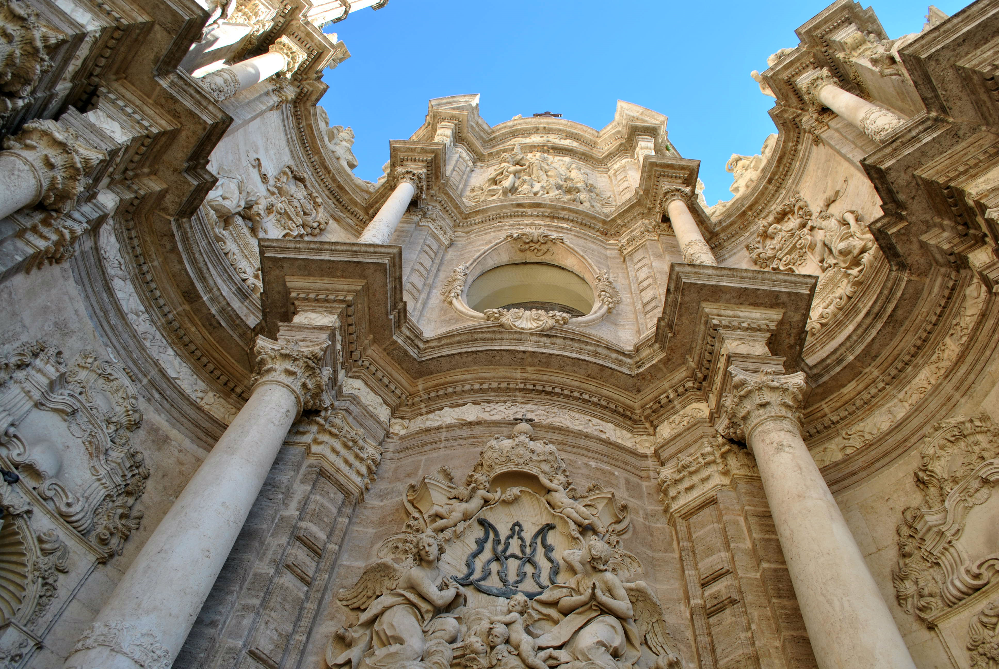

Prima di creare itinerari, c'erano già i viaggi.
Il mio passaporto Fuori Mappa
Alcuni li ho organizzati da zero, altri li ho scoperti viaggiando. Tutti hanno lasciato qualcosa nel mio modo di vedere il mondo.

Il mondo visto fin qui ✦
16Paesi visitati
+30Destinazioni
tanteStorie da raccontare
Le destinazioni
✦ trovi anche il mio itinerario sul sito

🇪🇸
Spagna
Valencia · Barcellona · Ibiza (Dalt Vila)
🇫🇷
Francia
Nizza
🇬🇧
Regno Unito
Londra · Bath · Cheltenham · Stonehenge
🇮🇹
Italia
Genova · Bologna · Verona · Venezia · Roma · Perugia · Ascoli Piceno · Alberobello · Polignano a Mare · Reggio Calabria · Napoli

Sicilia ♡
Casa, e il posto che conosco meglio.


Ogni viaggio, anche il più semplice, ha contribuito a far crescere la mia curiosità e la voglia di scoprire sempre nuovi posti.